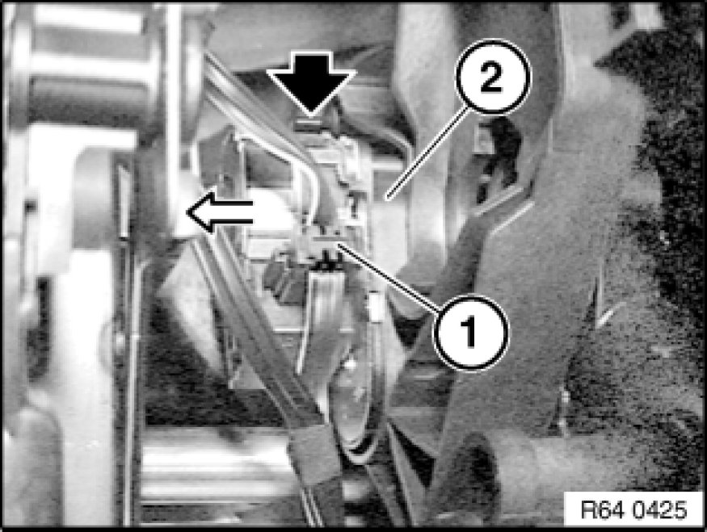

Passenger Side
64 11 829 - Replacing actuator drive of ventilation flaps

Necessary preliminary tasks:
- Disconnect battery negative lead Disconnecting and Connecting Battery Negative Lead
- Remove glovebox 51 16 366 Removing and Installing Right Glovebox With Housing
- Partially remove fuse box

Disconnect plug connection (1). Unlock actuator drive (2) and remove.

Installation Note:
If necessary, align shaft for defrosting flaps and drive (see illustration).